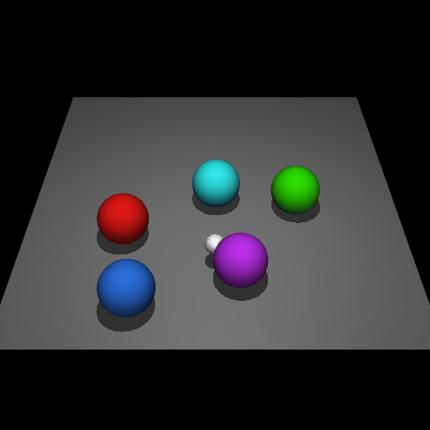

Reinforcement learning (RL) traditionally trains agents using interaction data, which limits their capabilities to the scope of the training data. To create more knowledgeable agents, leveraging knowledge from large language models (LLMs) has shown a promising way. Despite various attempts to combine LLMs with RL, there is commonly a semantic gap between action signals and LLM tokens, which hinders their integration. This paper introduces a novel approach, KALM (Knowledgeable Agents from Language Model Rollouts), to learn knowledgeable agents by bridging this gap. KALM extracts knowledge from LLMs in the form of imaginary rollouts, which agents can learn through offline RL. To overcome the limitation that LLMs are inherently text-based and may be incompatible with numerical environmental data, KALM fine-tunes the LLM to perform bidirectional translation between textual goals and rollouts. This process enables the LLM to understand the environment better, facilitating the generation of meaningful rollouts. Experiments on robotic manipulation tasks demonstrate that KALM allows agents to rephrase complex goals and tackle novel tasks requiring new optimal behaviors. KALM achieves a 46% success rate in completing 1400 various novel goals, significantly outperforming the 26% success rate of baseline methods.
@inproceedings{KALM,
title={KALM: Knowledgeable Agents by Offline Reinforcement Learning from Large Language Model Rollouts},
author={Jing-Cheng Pang, Si-Hang Yang, Kaiyuan Li, Jiaji Zhang, Xiong-Hui Chen, Nan Tang and Yang Yu},
booktitle={The 38th Annual Conference on Neural Information Processing Systems},
year={2024}
}